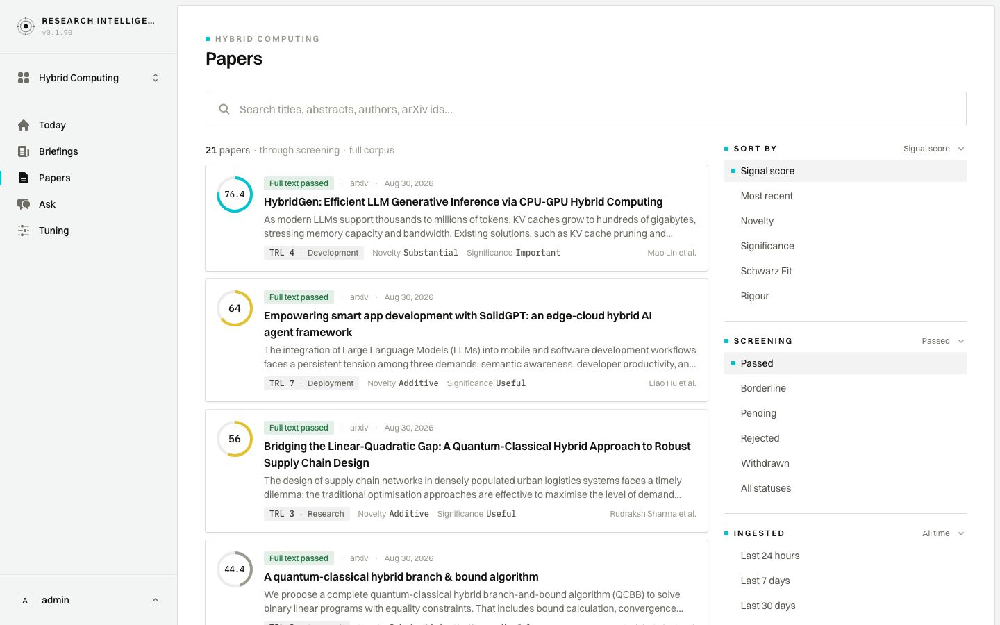
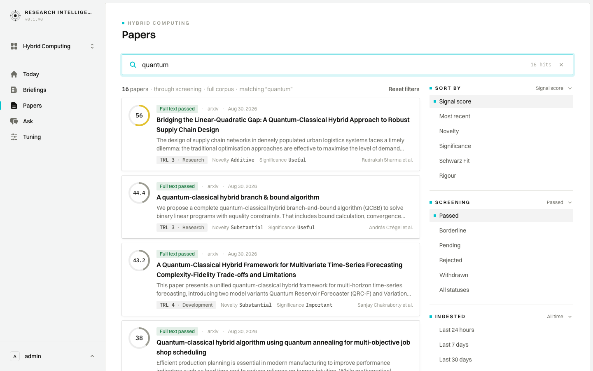
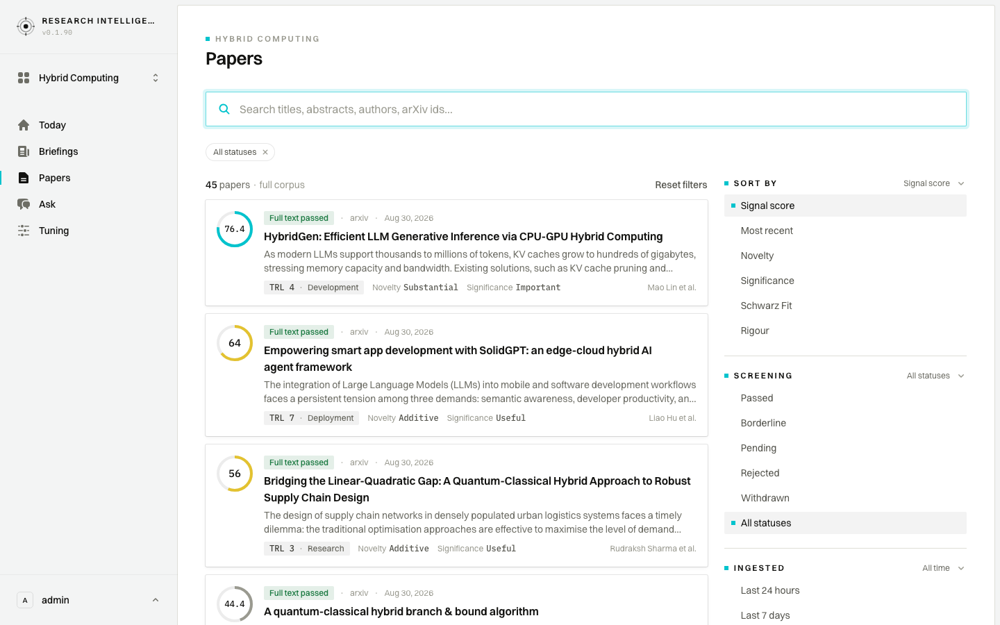
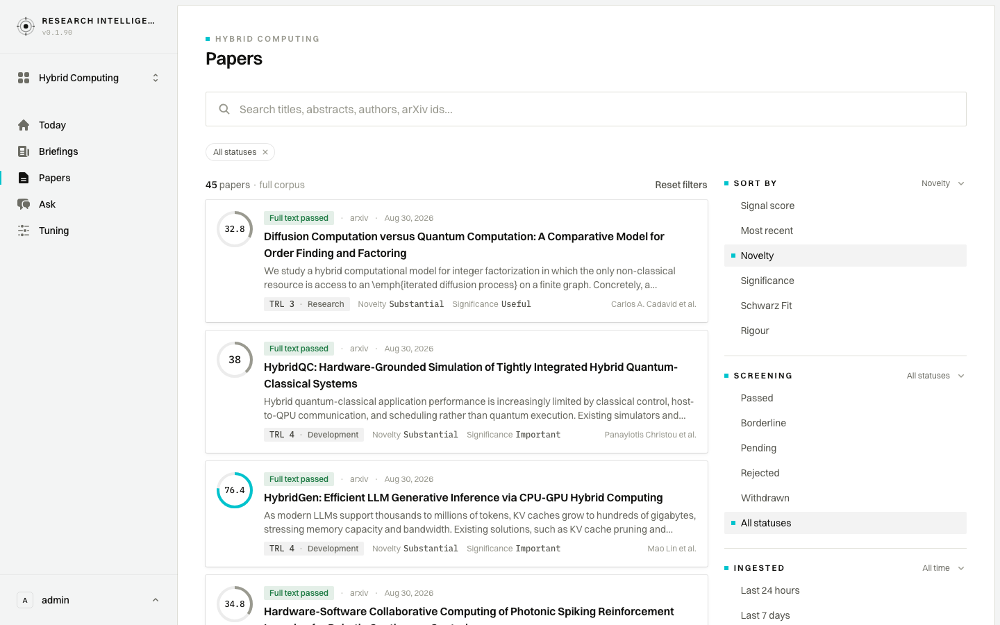
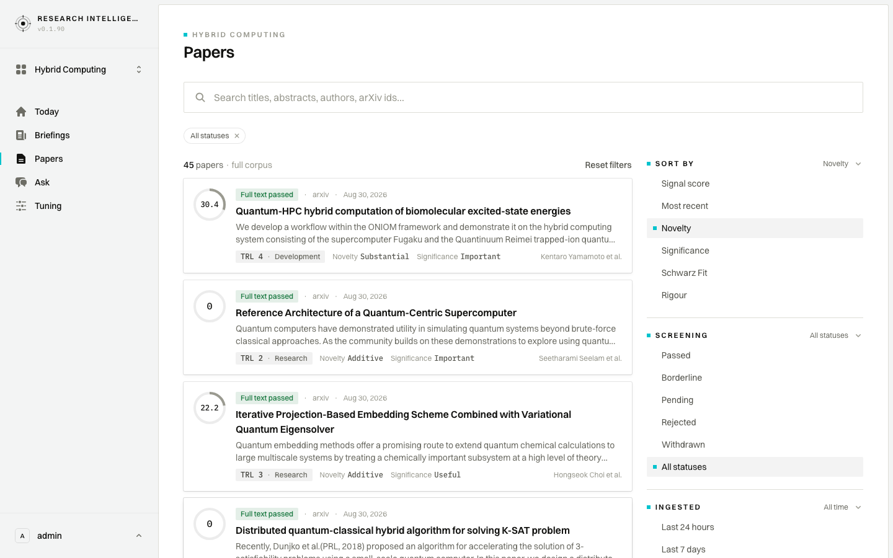
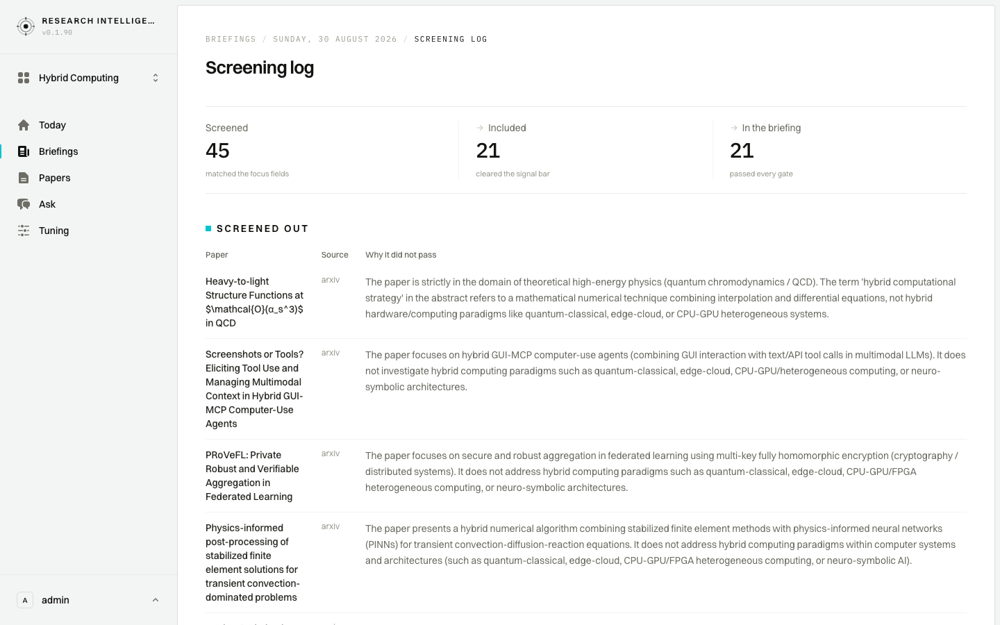
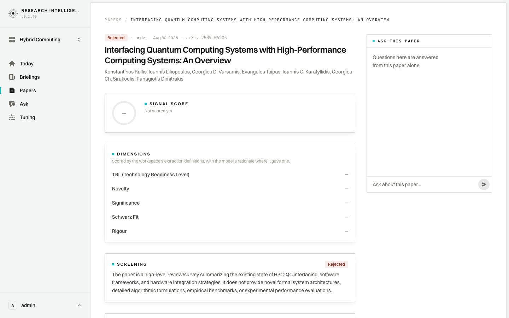

Analyst
Triage today's feed in ten minutes: what passed, what was screened out, what deserves a second look.
Lives in the filters, triages the feed daily
- The corpus, passed papers first
- Search by keyword
- Widen screening to everything
- Sort by a single dimension
- One page into the ranking
- What was screened out, and why
- A second look at one rejection
1 · The corpus, passed papers first

- Sees
- The Hybrid Computing corpus opens on the 21 papers that got through screening, strongest signal first: HybridGen at 76.4, then SolidGPT at 64, then a slide down through the forties.
- Does
- Reads down the cards without opening anything — screening status, source, date, the readiness level (TRL) band and the two headline dimensions are all on the card.
- Decides
- One clear leader and a thin middle, so the useful ten minutes are in the tail and in whatever never reached this list.
2 · Search by keyword

Clip · 4 s — the passed set narrowing as the word is typed
- Sees
- Typing quantum cuts the passed set from 21 to 16, the hit count sits in the search field, and the line above the results now reads through screening, full corpus, matching “quantum”.
- Does
- Searches titles, abstracts, authors and arXiv ids for the term this workspace was built around.
- Decides
- Quantum-classical work carries most of the passed set, so the five hybrids that are not quantum are worth reading as their own group.
3 · Widen screening to everything

Clip · 7 s — the screening filter widening, then the search clearing
- Sees
- Switching screening to All statuses and clearing the search takes the list from 16 back to the whole corpus of 45 papers, with a removable All statuses filter above the results.
- Does
- Drops the default screening filter to see everything the run touched, not only what cleared the bar.
- Decides
- The top of the ranking barely moves, because the 24 papers that did not pass were never scored — they drop to the tail of the ordered view with a dash where a score would be, and the reason each was cut has to be read in the screening log.
4 · Sort by a single dimension

Clip · 7 s — the ranking reshuffling from signal score to Novelty
- Sees
- Sorting by Novelty reshuffles the corpus: the Diffusion Computation order-finding paper leads on Substantial novelty while sitting at a signal score of 32.8, and HybridQC edges ahead of HybridGen. The cards show each paper's novelty band, while the order follows the underlying novelty number, which is why a 32.8 paper can lead a 76.4 one here.
- Does
- Swaps the sort from the headline signal score to one dimension, to see which papers the composite number is holding down.
- Decides
- Novelty and signal disagree at the top, and the order-finding paper is the one to read against the leader before the digest is written.
5 · One page into the ranking

- Sees
- Page two of the novelty ranking, every card marked Full text passed: the Quantum-HPC biomolecular workflow heads it at 30.4, Substantial novelty at TRL 4, then a Quantum-Centric Supercomputer reference architecture scoring 0 at TRL 2, an embedding scheme at 22.2, and a distributed K-SAT algorithm scoring 0 as well.
- Does
- Pages past the top of the ranking to see whether one page in changes the picture, reading the scores against the maturity bands.
- Decides
- The two zeroes are concept-stage work, scored rather than left blank, and the page is mixed rather than a tail — nothing here moves this week, so the remaining time goes on the exclusions.
6 · What was screened out, and why

- Sees
- The run behind the 30 August edition: 45 screened, 21 included, 21 in the briefing, then a table of everything that did not pass, with a written reason against each title.
- Does
- Reads the reasons down the column — the four in view are all papers that use the word hybrid about something other than computing hardware: a numerical method, a GUI agent, an encryption scheme.
- Decides
- The screen is holding the line it was set to hold, and nearly every exclusion is plainly off-topic. The exception is an on-topic overview cut for being descriptive rather than empirical, one row further down the table, and that one is worth reopening.
7 · A second look at one rejection

- Sees
- The rejected HPC-QC overview at the top of its page: Rejected against the title, no signal score — Not scored yet — a dash in all five dimensions, and a screening note saying the paper surveys the field without offering new architectures, benchmarks or performance evaluations.
- Does
- Narrows the corpus to Rejected, finds the overview by name and opens it to read the screening note, with the abstract below it on the same page.
- Decides
- The exclusion holds — a survey is not a signal — and the reason is specific enough to trust, so the rest of the rejected tail can be left alone today.
Caveats
- The snapshot holds one completed run, dated 30 August 2026, so every paper in Hybrid Computing carries the same ingest date and the Ingested time windows separate nothing.
- This workspace has no borderline or pending papers. The 45 split into 21 that passed full-text screening, 23 rejected and 1 withdrawn, so the second look in step 7 is at a rejected paper rather than a borderline one.
- Papers that did not pass screening are never scored: no signal score, and a dash in every dimension, though they stay labelled with their screening status. Widening the screening filter therefore changes the counts and the filters shown but leaves the top of a scored ranking untouched — steps 1 and 3 open on the same three papers in the same order.
- Widening to All statuses also drops the through screening clause from the line above the results, which then reads simply 45 papers, full corpus.
- The screening log lists all 24 exclusions in one long table, so step 6 shows the funnel band and the first four reasons. The rejected overview that step 7 opens sits further down that table.
- The log's exclusion rows are plain rows, not links, so step 7 returns to the corpus and filters to Rejected rather than clicking through from the log.
- Paging forward leaves the list scrolled to its foot. Step 5's frame is at the head of page two, so the pager is out of view and no page count is on show.
- Two papers on page two of the novelty ranking score 0 rather than going unscored. That is a real judgement the run made, not a missing number — and the two are not a neighbouring pair: they sit second and fourth, with a 22.2-scoring embedding scheme between them, so the four cards in frame read 30.4, 0, 22.2, 0.
- Screening states appear exactly as the app words them: Full text passed, Rejected, Withdrawn.
- Step 7 shows the first screenful of the paper rather than the whole page. The signal score, the five dashed dimensions and the screening note all sit above the fold; the abstract and the file links sit below it, out of frame.
- The Ask panel on the paper page is shown at rest.
- Selecting All statuses adds a filter row above the results and pushes the screening list down a row.